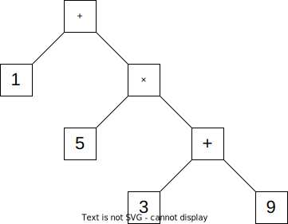
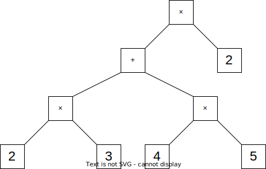

Exercice 1 : Évaluation d'expression à l'aide d'arbres (10 points)
On s'intéresse à l'évaluation d'expressions mathématiques comportant uniquement des additions et des
multiplications. On utilisera pour cela les structures de file et de pile, dont les interfaces
sont
données ci-dessous :
Interface de la classe Pile :
Pile() : crée une pile vide.
empile(el) : empile l'élément el au sommet de la pile.
depile() : supprime et renvoie l'élément au sommet de la pile, déclenche une
erreur si la pile est vide.
est_vide() : renvoie True si la pile est vide, False
sinon.
Interface de la classe File :
File() : crée une file vide.
enfile(el) : enfile l'élément el à la queue de la file.
defile() : supprime et renvoie l'élément en tête de la file, déclenche une
erreur
si la file est vide.
est_vide() : renvoie True si la file est vide, False
sinon.
Pour tenir compte de l'ordre des opérations, on représente les expressions par des arbres
binaires.
Ainsi, l'expression 1+5×(3+9) est représentée par l'arbre 1 :
Arbre 1

Arbre 2

Donner l'expression représentée par l'arbre 2.
(1 pt)
((2×3)+(4×5))×2
On décide d'implémenter en Python un arbre binaire à l'aide de la classe Noeud
ci-dessous :
class Noeud:
def __init__(self, etiquette, gauche, droit):
self.etiq = etiquette
self.sag = gauche
self.sad = droit
Un sous-arbre vide sera représenté par None.
Dessiner l'arbre expression qui est défini par le code suivant :
Le parcours suffixe (aussi appelé postfixe) d'un arbre représentant une expression mathématique
permet d'en obtenir une représentation appelée notation polonaise inversée.
Donner la liste des étiquettes de l'arbre 2 de la question 1 dans l'ordre du parcours
suffixe de cet arbre.
On donne ci-après trois propositions de fonctions récursives dont le premier paramètre est
un arbre représentant une expression mathématique et le deuxième est une file initialement
vide.
Laquelle de ces fonctions renvoie la file contenant les étiquettes de l'arbre dans l'ordre
du parcours suffixe ? Justifier.
(2 pts)
Il s'agit de la proposition 3 ; suffixe : la racine est notée à la fin.
L'évaluation d'une expression mathématique consiste à effectuer les différentes opérations
pour obtenir le résultat du calcul correspondant.
On donne un algorithme qui permet d'évaluer une expression sous la forme d'un arbre :
On effectue un parcours suffixe de cet arbre pour obtenir une file contenant ses
étiquettes dans l'ordre de la notation polonaise inversée.
Pour chaque élément défilé :
Si c'est un nombre : on l'empile.
Si c'est un opérateur ("+" ou "*"), on dépile les
deux éléments d et g au sommet de la pile, et on
empile le résultat de l'opération appliquée à
g et d.
Lorsque la file est vide, la pile contient un seul élément : le résultat de
l'évaluation de l'expression.
Par exemple, lors de l'évaluation de l'expression en notation polonaise inversée
: 3 10 + 5 × voici les différents états de la pile, suite au
défilement
d'un élément :
Élément défilé
3
10
+
5
×
Pile
3
10 3
13
5 13
65
La fonction evalue(arbre) implémente cet algorithme. Elle renvoie le
résultat de l'évaluation d'une expression mathématique représentée par un arbre
binaire arbre passé en paramètre.
Compléter cette fonction. On pourra utiliser la fonction op définie
ci-contre.
def evalue(arbre):
f = suffixe(arbre, File())
p = Pile()
while ... :
elt = f.defile()
if elt == '+' or elt == '*':
# plusieurs lignes
...
else:
...
return ...
(4 pts)
def evalue(arbre):
f = suffixe(arbre, File())
p = Pile()
while not(f.est_vide()) :
elt = f.defile()
if elt == '+' or elt == '*':
x = p.depile()
y = p.depile()
resultat = op(elt, x, y)
p.empile(resultat)
else:
p.empile(elt)
return p.depile()
Exercice 2 : SQL : Jeu de Go (10 points)
Le jeu de go est un jeu de société originaire de Chine.
Il oppose deux adversaires qui placent à tour de rôle des pierres, respectivement noires et blanches,
sur un
plateau.
Dans cette partie on pourra utiliser les mots clés suivants du langage SQL :
La fonction d'agrégation COUNT(*) renvoie le nombre d'enregistrements de la requête.
Les fonctions d'agrégations MIN(propriete) et MAX(propriete) renvoient
respectivement la plus petite et la plus grande valeur de l'attribut propriete pour les
enregistrements de la requête.
La commande ORDER BY propriete permet de trier les résultats d'une requête selon
l'attribut propriete.
Le responsable de la fédération internationale de go enregistre dans une base de données les résultats
de parties historiques.
Il définit pour cela des relations Joueurs, Parties et Tournois
qui
suivent le schéma relationnel suivant (les clés primaires sont soulignées et les clés étrangères sont
précédées du caractère #). idnoir et idblanc permettent de repérer quel joueur avait quelle couleur de
pierre (blanches ou noires).
Joueurs
idjoueur
INT
nom
TXT
naissance
INT
nation
TXT
Parties
#idnoir
INT
#idblanc
INT
#tournoi
INT
jour
DATE
score
FLOAT
Tournois
idtournoi
INT
nom
TXT
pays
TXT
On suppose que ce schéma relationnel a été implémenté dans le système de gestion de bases de
données.
Voici trois lignes extraites du script SQL ayant servi à la création de ce schéma :
Quelle est l'erreur produite par cette suite d'instructions ? Justifier.
(2 pts)
Il est impossible d'insérer la partie correspondant au tournoi 1 dans la relation
Parties sachant que le tournoi 1 n'est pas entré dans la relation
Tournoi : erreur de référence.
Comment corriger cette suite d'instructions pour que le traitement s'effectue sans erreur ?
(1 pt)
Il suffit d'inverser les deux dernières instructions INSERT INTO ....
On donne ci-dessous un extrait des enregistrements contenus dans la base de données :
Tournois
idtournoi
nom
pays
0
Inconnu
Autre
1
Osaka
Japon
2
Kamakura Games
Japon
3
Meijin
Japon
4
Honinbo
Japon
5
Guksu
Corée
6
Ton Yang Cup
Corée
Joueurs
idjoueur
nom
naissance
nation
1
Dosaku
1645
Japon
2
Genan Inseki
1798
Japon
3
Shusaku
1829
Japon
4
Kitani Miruno
1909
Japon
5
Go Seigen
1914
Chine
6
Sakata Eio
1920
Japon
7
Rin Kaiho
1942
Taiwan
8
Cho Chikun
1953
Corée
9
Rui Naiwei
1963
Chine
10
Lee Chango
1975
Corée
Parties
idnoir
idblanc
tournoi
jour
score
2
3
1
1846-09-12
-2
4
5
0
1922-11-12
0
5
4
2
1939-09-28
2
5
6
0
1953-11-19
999
5
4
3
1961-06-28
999
6
5
3
1962-08-05
0
7
6
3
1967-08-09
2
7
8
4
1983-05-16
-999
10
8
6
1993-04-24
0.5
9
10
5
2000-01-04
999
On considère la requête SQL ci-dessous :
SELECT COUNT(*) FROM Parties
WHERE idblanc = 4 OR idnoir = 4;
Quel serait l'affichage produit par cette requête, appliqué au seuls extraits des
enregistrements dans les tableaux précédents ?
(1 pt)
3
Expliquer avec une phrase ce que renvoie cette requête.
(1 pt)
Il s'agit du nombre de parties jouées par le joueur Kitani Miruno, (d'id 4), avec les noirs ou avec les
blancs.
Proposer une requête qui renvoie, par ordre alphabétique, les noms des tournois ayant eu
lieu au Japon.
(2 pt)
SELECT nom
FROM Tournois
WHERE pays = 'Japon'
ORDER BY pays ASC ;
Expliquer en une phrase ce que fait la requête ci-dessous :
SELECT DISTINCT nom
FROM Joueurs JOIN Parties
ON (Joueurs.idjoueur = Parties.idnoir
OR Joueurs.idjoueur = Parties.idblanc)
WHERE Parties.tournoi = 3 ;
(1 pts)
Elle affiche, sans doublons, la liste des noms des joueurs qui ont participé au tournoi
d'id 3 (Meijin).
Proposer une requête qui renvoie les noms des joueurs qui ont joué avec les pierres noires
le 15 mars 2016.
(2 pts)
SELECT DISTINCT nom
FROM Joueurs JOIN Parties
ON Joueurs.idjoueur = Parties.idnoir
WHERE Parties.jour = '2016-03-15' ;
Exercice 3 : Base de données Mozilla (4 points)
Voici le schéma (d'une version simplifiée) de la base de données gérant l'historique (places) et les
marques pages, ou
favoris
(bookmarks) du navigateur Firefox :
moz_places(id VARCHAR(50),
url VARCHAR(70),
title VARCHAR(50),
visit_count INT
)
moz_bookmarks(id INT,
#fk(moz_places.id) VARCHAR(50),
name VARCHAR(50),
#parent(moz_bookmarks.id) INT,
position VARCHAR(20)
)
Les clés primaires sont soulignées. # indique une clé étrangère (l'attribut référencé est
précisé entre parenthèses).
Un marque-page est soit un dossier (son url est alors vide : NULL), soit un marque-page «normal» (avec url
non
vide, que cette url soit correcte ou non).
Pour chaque affirmation, entourer sa valeur booléenne :
Une même page web peut être enregistrée par deux marques-pages dont les noms sont
différents.
vraiFaux
(1 pt)
Vrai : ces marques-pages peuvent aussi avoir le même nom et le même parent ;
leurs id deront différentes.
Un marque page peut référencer plusieurs pages web.
vraiFaux
(1 pt)
Faux : l'attribut fk renvoie à l'id d'une page : une seule adresse est
enregistrée.
Expliquer comment modifier ce schéma pour qu'une page ne puisse être référencée que par un seul
marque page.
(2 pts)
On peut ajouter une contraite UNIQUE sur l'attribut fk.